Beri kami feedback untuk dokumentasi yang lebih baik kedepannya.
Jika anda menemukan adanya kesalahan dalam dokumentasi, silahkan berikan informasi ke Tim Support MKNT Dev-IT.
Berikut ini merupakan bagian penting dari sumber data awal AG-Accounting:
*Pada daftar menu berikut ini terdapat beberapa sumber data yang secara otomatis ditarik dari sistem AG utama (auto), sehingga sama sekali tidak ada event create data yang bisa dijalankan.
(auto)
Sumber data akun kas/bank dari MKNT. Terdiri dari fitur untuk membuat akun baru, melakukan update data, penghapusan data, pencarian dan export data.
Sumber data tipe akun pada AG-Accounting yang otomatis diambil dari AG utama. Terdiri dari fitur untuk melakukan pencarian dan export data.
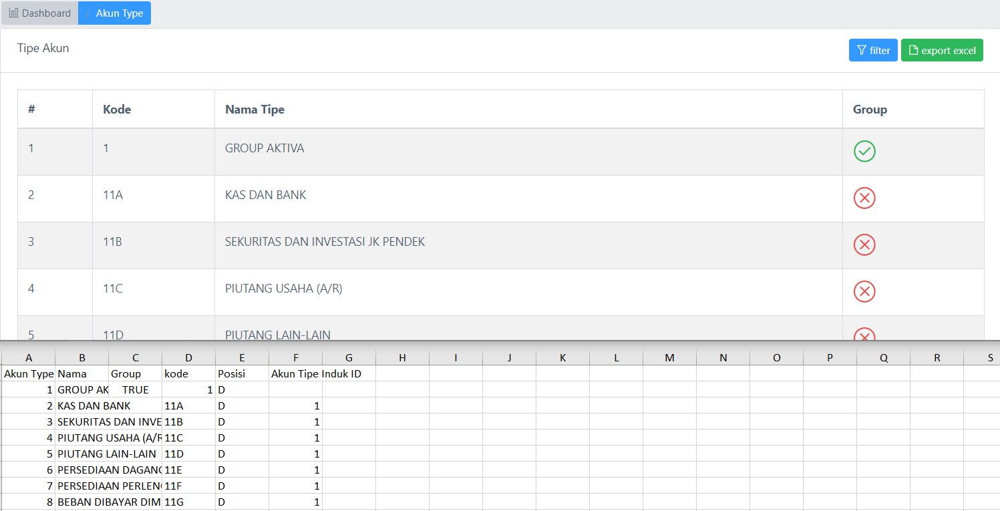
Sumber data akun shape pada AG-Accounting yang otomatis diambil dari AG utama. Terdiri dari fitur untuk melakukan pencarian dan export data.
Sumber data akun MKNT. Terdiri dari fitur untuk membuat akun baru, melakukan update data, penghapusan data, pencarian dan export data.
Sumber data akun default MKNT. Terdiri dari fitur untuk membuat akun baru, melakukan update data, penghapusan data, pencarian dan export data.
Fitur menu untuk proses mapping data akun-akun pada AG-Accounting
Fitur ini berfungsi untuk melakukan mapping data pada akun asset atau aktiva tetap
Fitur ini berfungsi untuk melakukan mapping data bayar dimuka
Pengguna dapat melakukan edit data bayar dimuka, dengan klik tombol pada tampilan berikut :
Setelah itu akan muncul tampilan data maping akun bayar dimuka sesuai pilihan data yang akan diupdate:
Pilih data yang akan di update, kemudian akan muncul form update data sesuai yang sudah dipilih, lalu update data sesuai dengan kebutuhan.
Pengguna dapat melakukan tambah data bayar dimuka, dengan klik tombol tambah, lalu muncul form tambah data seperti berikut:
Pengguna dapat melakukan hapus data bayar dimuka, dengan klik tombol lalu muncul pop up konfirmasi hapus data
Pengguna dapat melakukan export data bayar dimuka, dengan klik tombol export excel, kemudian data yang sudah di export akan tampil sebagai berikut :
Pengguna dapat melakukan import data, dengan klik tombol import excel, kemudian muncul form import untuk pilih cabang sesuai kebutuhan
Pilih file yang akan diuplaod sesuai dengan format yang sudah ditentukan
Tunggu proses improt excel
Data berhasil diimport, tampilan data sesuai dengan file yang telah di import
Menu Kas untuk monitoring data kas yang masuk.
Pengguna dapat melakukan filter data kas dengan memilih keyword sesuai dengan kebutuhan yang akan dicari
Data tampil sesuai filter dan keyword yang sudah dipilih, sebagai berikut:
Pengguna dapat melakukan edit data kas, dengan klik tombol pada tampilan berikut :
Setelah itu akan muncul tampilan data maping akun kas sesuai pilihan data yang akan diupdate:
Pengguna dapat melakukan tambah data kas sesuai dengan bank yang sudah dipilih, dengan klik tombol tambah, lalu muncul form tambah data seperti berikut:
Pengguna dapat melakukan hapus data maping kas, dengan klik tombol lalu muncul pop up konfirmasi hapus data
Pengguna dapat melakukan export excel data kas, dengan klik tombol export excel, kemudian data yang sudah di export akan tampil sebagai berikut :
Pengguna dapat melakukan import data kas, dengan klik tombol import excel, kemudian muncul form import untuk pilih cabang sesuai kebutuhan
Menu supplier untuk mapping data supplier.
Pengguna dapat melakukan filter data supplier dengan memilih keyword sesuai dengan kebutuhan yang akan dicari
Jika keyword tidak diisi maka akan muncul notif seperti berikut :
Pada filter data tersebut keyword harus diisikan, fitur ini untuk mempermudah dalam pencarian data berdasarkan yang dibutuhkan
Pengguna dapat melakukan edit data supplier, dengan klik tombol pada tampilan berikut :
Setelah itu akan muncul tampilan data detail supplier, kemudian klik pada tombol seperti berikut:
Pengguna dapat melakukan hapus data supplier berdasarkan detail supplier yang dipilih, dengan klik tombol , lalu muncul pop up konfirmasi hapus data supplier seperti berikut:
Pengguna dapat melakukan tambah data supplier sesuai dengan detail supplier yang sudah dipilih, dengan klik tombol , lalu muncul form tambah data, tambahkan data sesuai dengan input data yang dibutuhkan:
Pengguna dapat melakukan export data supplier, dengan klik tombol , kemudian data yang sudah di export akan tampil sebagai berikut :
Pengguna dapat melakukan import data supplier, dengan klik tombol , kemudian muncul form import untuk pilih cabang sesuai kebutuhan
Fitur menu untuk mapping data seller.
Pengguna dapat melakukan filter data, klik tombol kemudian masukkan keyword sesuai dengan data yang akan dicari
Pengguna dapat melakukan edit data seller, dengan klik tombol pada tampilan berikut :
Pengguna dapat melakukan hapus data seller berdasarkan detail seller yang dipilih, dengan klik tombol , lalu muncul pop up konfirmasi hapus data supplier seperti berikut:
Pengguna dapat melakukan tambah data seller sesuai dengan detail seller yang sudah dipilih, dengan klik tombol , lalu muncul form tambah data, tambahkan data sesuai dengan input data yang dibutuhkan:
Pengguna dapat melakukan export data seller, dengan klik tombol , kemudian data yang sudah di export akan tampil sebagai berikut :
Pengguna dapat melakukan import data seller, dengan klik tombol , kemudian muncul form import untuk pilih cabang sesuai kebutuhan
Fitur menu ini untuk monitoring data customer pada AG-Accounting.
Pengguna dapat melakukan filter data customer dengan memilih keyword sesuai dengan kebutuhan yang akan dicari
Pada filter data tersebut keyword harus diisikan, fitur ini untuk mempermudah dalam pencarian data berdasarkan yang dibutuhkan, setelah keyword diisi akan tampil data sesuai dengan yang diisikan, seperti berikut:
Pengguna dapat melakukan edit data customer, dengan klik tombol pada tampilan berikut :
Setelah itu akan muncul tampilan data detail customer, kemudian klik pada tombol seperti berikut:
Pengguna dapat melakukan hapus data customer berdasarkan detail customer yang dipilih, dengan klik tombol , lalu muncul pop up konfirmasi hapus data customer seperti berikut:
Pengguna dapat melakukan tambah data customer sesuai dengan detail supplier yang sudah dipilih, dengan klik tombol , lalu muncul form tambah data, tambahkan data sesuai dengan input data yang dibutuhkan:
Pengguna dapat melakukan export data customer, dengan klik tombol , kemudian data yang sudah di export akan tampil sebagai berikut :
Pengguna dapat melakukan import data customer, dengan klik tombol , kemudian muncul form import untuk pilih cabang sesuai kebutuhan
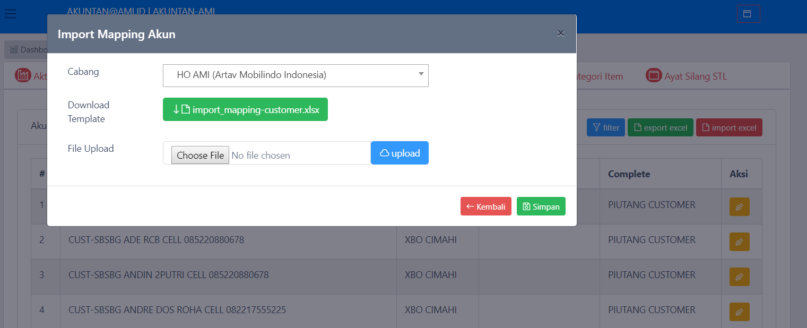
Fitur menu untuk monitoring mapping data pada income.
Pengguna dapat melakukan filter data income dengan memilih keyword sesuai dengan kebutuhan yang akan dicari
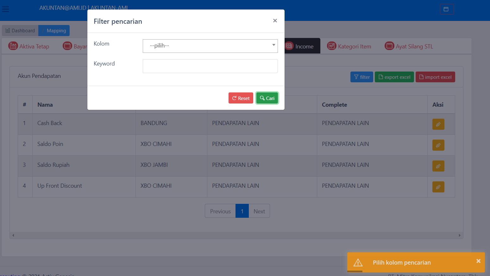
Pada filter data tersebut keyword harus diisikan, fitur ini untuk mempermudah dalam pencarian data berdasarkan yang dibutuhkan, setela keyword diisi akan muncul data seperti yang dibutuhkan
Pengguna dapat melakukan edit data income, dengan klik tombol pada tampilan berikut :
Setelah itu akan muncul tampilan data detail income, kemudian klik pada tombol seperti berikut:
Pengguna dapat melakukan hapus data income berdasarkan detail supplier yang dipilih, dengan klik tombol , lalu muncul pop up konfirmasi hapus data supplier seperti berikut:
Pengguna dapat melakukan tambah data income sesuai dengan detail supplier yang sudah dipilih, dengan klik tombol , lalu muncul form tambah data, tambahkan data sesuai dengan input data yang dibutuhkan:
Pengguna dapat melakukan export data income, dengan klik tombol , kemudian data yang sudah di export akan tampil sebagai berikut :
Pengguna dapat melakukan import data income, dengan klik tombol , kemudian muncul form import untuk pilih cabang sesuai kebutuhan
Fitur menu untuk monitoring mapping data pada kategori item.
Pengguna dapat melakukan filter data kategori item dengan memilih keyword sesuai dengan kebutuhan yang akan dicari
Pengguna dapat melakukan edit data kategori item, dengan klik tombol pada tampilan berikut :
Setelah itu akan muncul tampilan data detail kategori item, kemudian klik pada tombol seperti berikut:
Pengguna dapat melakukan hapus data kategori item berdasarkan detail kategori item yang dipilih, dengan klik tombol , lalu muncul pop up konfirmasi hapus data kategori item seperti berikut:
Pengguna dapat melakukan tambah data kategori item sesuai dengan detail kategori item yang sudah dipilih, dengan klik tombol , lalu muncul form tambah data, tambahkan data sesuai dengan input data yang dibutuhkan:
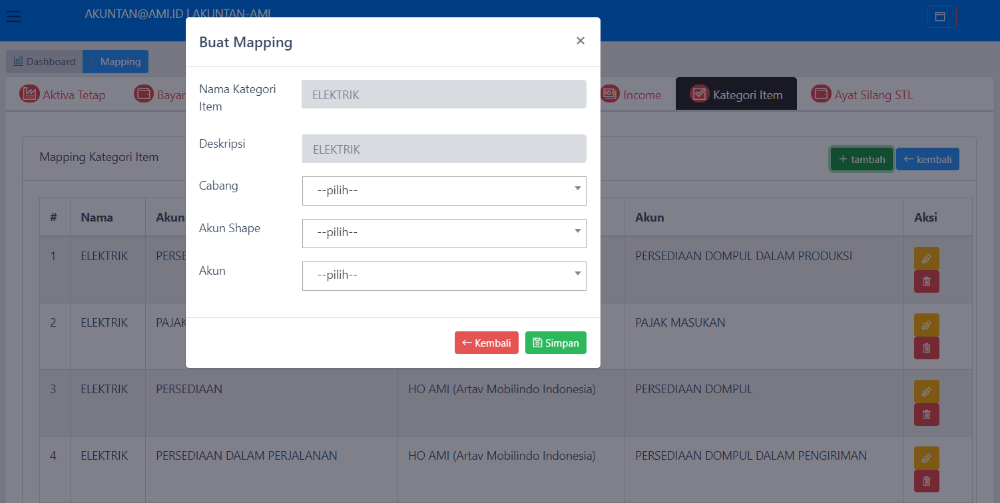
Pengguna dapat melakukan export data kategori item, dengan klik tombol , kemudian data yang sudah di export akan tampil sebagai berikut :
Pengguna dapat melakukan import data kategori item, dengan klik tombol , kemudian muncul form import untuk pilih cabang sesuai kebutuhan
Fitur menu untuk monitoring mapping data pada Ayat Silang STL.
Pengguna dapat melakukan filter data ayat silang STL dengan memilih keyword sesuai dengan kebutuhan yang akan dicari
Pengguna dapat melakukan edit data ayat silang STL, dengan klik tombol pada tampilan berikut :
Setelah itu akan muncul tampilan data detail ayat silang STL, kemudian klik pada tombol seperti berikut:
Pengguna dapat melakukan hapus data ayat silang STL berdasarkan detail ayat silang STL yang dipilih, dengan klik tombol
Pilih tombol delete seperti dibawah :
Lalu muncul pop up konfirmasi hapus data kategori item seperti berikut:
Pengguna dapat melakukan tambah data ayat silang STL sesuai dengan detail ayat silang STL yang sudah dipilih, dengan klik tombol , lalu muncul form tambah data, tambahkan data sesuai dengan input data yang dibutuhkan:
Pengguna dapat melakukan export data ayat silang STL, dengan klik tombol , kemudian data yang sudah di export akan tampil sebagai berikut :
Pengguna dapat melakukan import data ayat silang STL, dengan klik tombol , kemudian muncul form import untuk pilih cabang sesuai kebutuhan
Fitur menu untuk monitoring posting data pada AG-Accounting.
*dimana proses transaksi posting utama dilakukan oleh cron job pada background proses (auto).
Fitur menu PO ini untuk memonitoring postingan data yang meliputi sub menu belum posting, sub menu sudah posting, sub menu tidak posting, sub menu gagal posting dan koreksi jurnal.
: ini digunakan untuk memonitoring posting transaksi yang belum diposting
: ini digunakan untuk memonitoring posting transaksi yang sudah diposting
: ini digunakan untuk memonitoring posting transaksi yang tidak posting
: ini digunakan untuk memonitoring posting transaksi yang gagal diposting
: ini digunakan untuk memonitoring posting transaksi koreksi jurnal
Fitur sub menu belum posting ini untuk monitoring data yang belum posting pada AG-Accounting.
Pengguna dapat melakukan filter data belum posting dengan cara klik tombol pada bagian seperti dibawah ini :
Kemudian akan muncul pop up inputan filter by keyword yang akan dicari, seperti berikut :
IsiKan keyword pada variabel inputan kemudian data yang dicari akan muncul
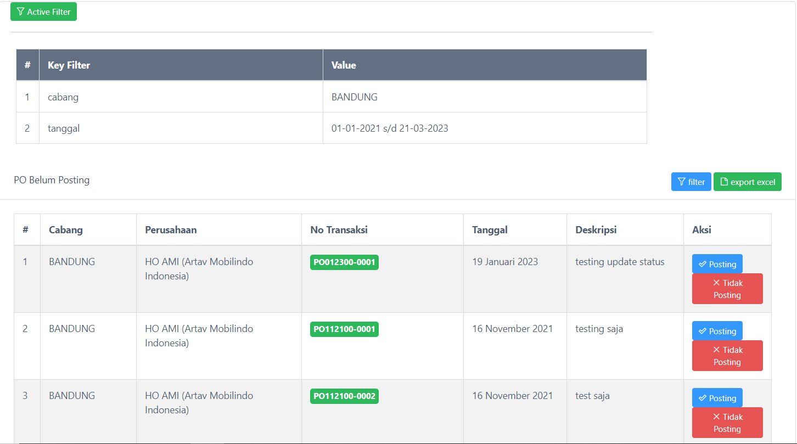
Pengguna dapat melakukan export data belum posting dengan cara klik tombol pada bagian seperti dibawah ini :
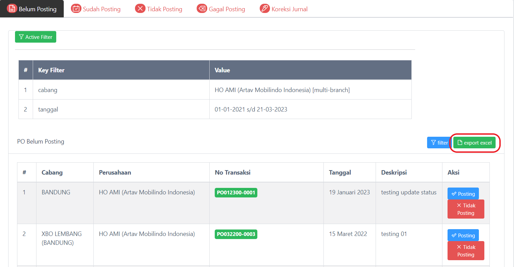
Kemudian data hasil export excel yang sudah didownload akan muncul sebagai berikut:
Fitur sub menu belum posting ini untuk monitoring data yang sudah diposting pada AG-Accounting.
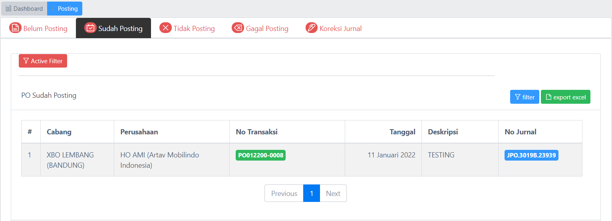
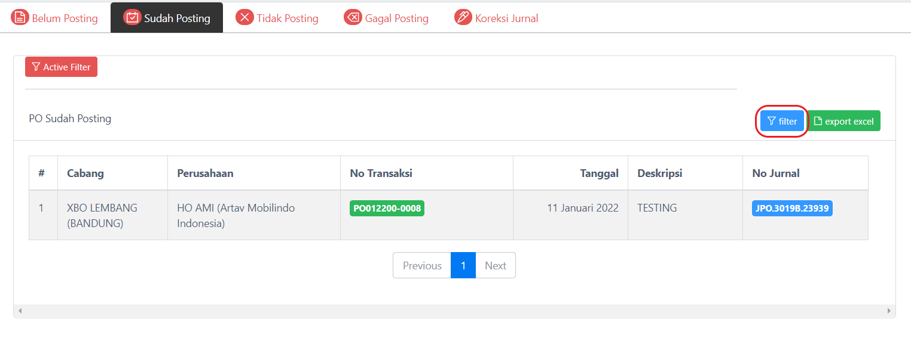
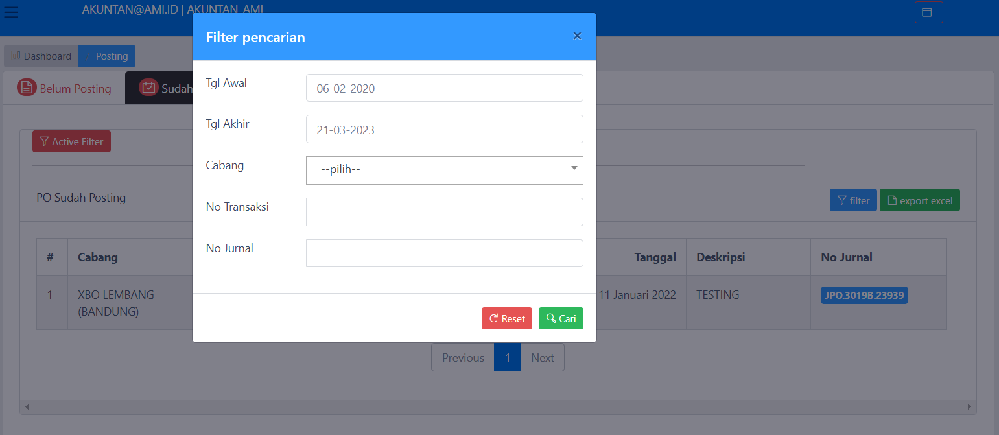
Isian keyword pada variabel inputan kemudian data yang dicari akan muncul
Pengguna dapat melakukan export data sudah posting dengan cara klik tombol pada bagian seperti dibawah ini :
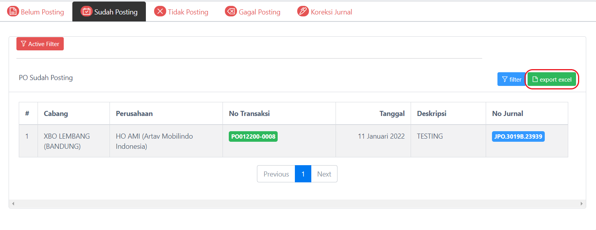
Fitur sub menu tidak posting ini untuk monitoring data yang tidak diposting pada AG-Accounting.
Pengguna dapat melakukan filter data tidak diposting dengan cara klik tombol pada bagian seperti dibawah ini :
Pengguna dapat melakukan export data yang tidak diposting dengan cara klik tombol pada bagian seperti dibawah ini :
Fitur sub menu gagal posting ini untuk monitoring data yang gagal diposting pada AG-Accounting.
Pengguna dapat melakukan filter data gagal diposting dengan cara klik tombol pada bagian seperti dibawah ini :
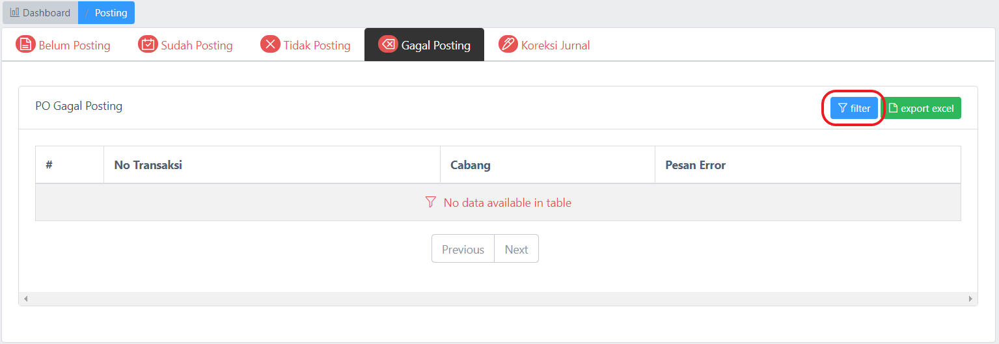
Pengguna dapat melakukan export data gagal posting dengan cara klik tombol pada bagian seperti dibawah ini :
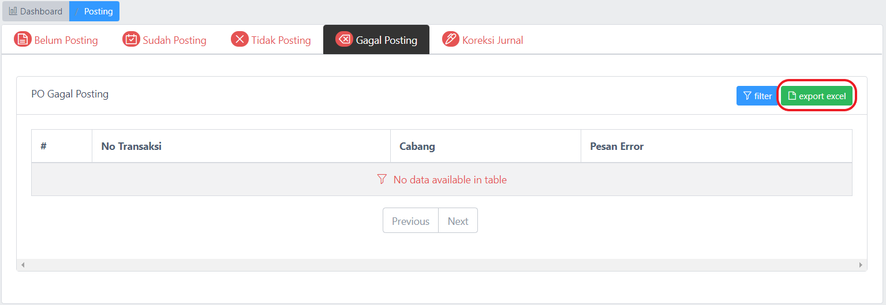
Fitur sub menu koreksi jurnal ini untuk monitoring data koreksi jurnal posting pada AG-Accounting.
Pengguna dapat melakukan filter data koreksi jurnal dengan cara klik tombol pada bagian seperti dibawah ini :
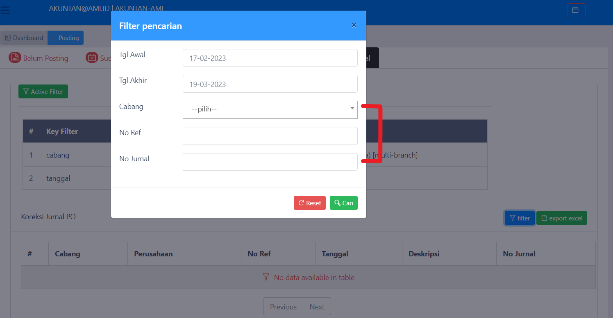
Isikan keyword pada variabel inputan, kemudian data yang dicari akan muncul
Pengguna dapat melakukan export data koreksi jurnal po dengan cara klik tombol pada bagian seperti dibawah ini :
Fitur menu penerimaan ini untuk memonitoring posting data penerimaan yang meliputi sub menu belum posting, sub menu sudah posting, sub menu tidak posting, sub menu gagal posting dan koreksi jurnal.
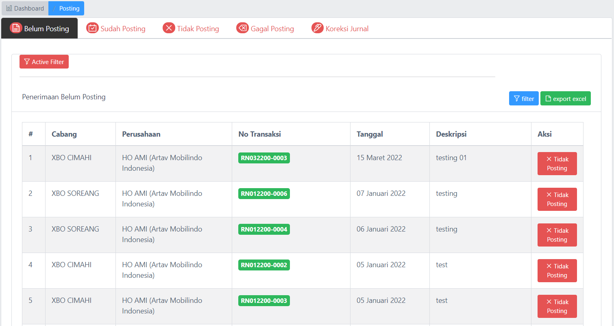
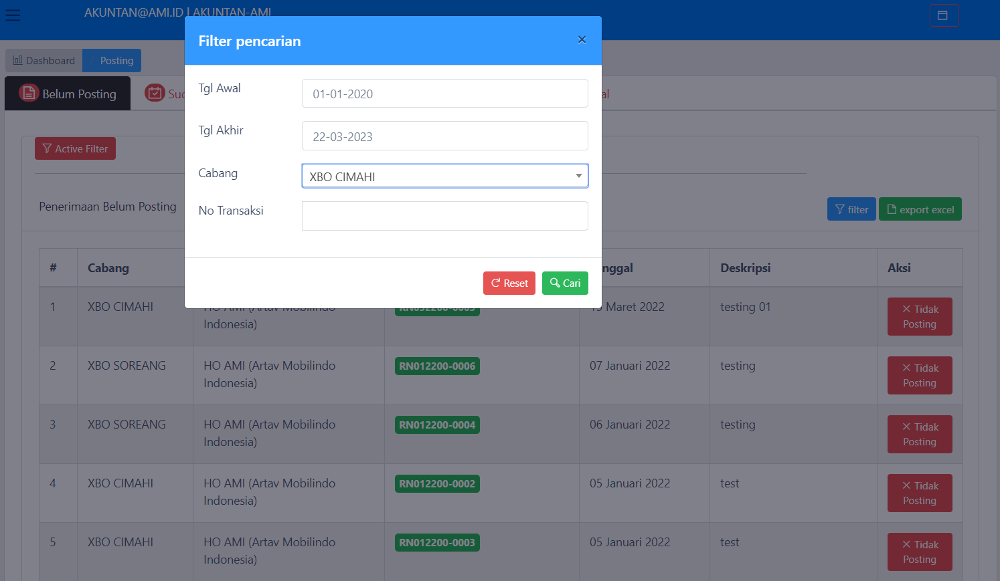
Pengguna dapat melakukan export data penerimaan yang belum posting dengan cara klik tombol pada bagian seperti dibawah ini :
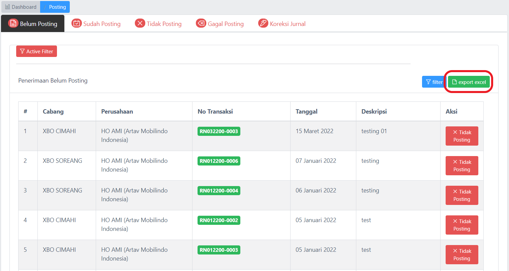
Fitur menu transfer keluar ini untuk memonitoring data transfer keluar, yang mana didalamnya terdapat sub menu yang meliputi sub menu belum posting, sub menu sudah posting, sub menu tidak posting, sub menu gagal posting dan koreksi jurnal.
Fitur sub menu belum posting ini untuk monitoring data transfer keluar yang belum posting pada AG-Accounting.
Isikan keyword pada variabel inputan kemudian data yang dicari akan muncul
Pengguna dapat melakukan filter data transfer keluar yang sudah diposting dengan cara klik tombol pada bagian seperti dibawah ini :
Fitur sub menu tidak posting ini untuk monitoring data transfer keluar yang tidak diposting pada AG-Accounting.
Fitur sub menu gagal posting ini untuk monitoring data transfer keluar yang gagal diposting pada AG-Accounting.
Fitur sub menu koreksi jurnal ini untuk monitoring data trasnfer keluar koreksi jurnal posting pada AG-Accounting.
Fitur menu jurnal akuntansi ini untuk memonitoring data jurnal yang didalamnya terdapat monitoring data tipe jurnal, saldo awal akun, jurnal memorial dan semua jurnal.
: ini digunakan untuk memonitoring data tipe jurnal
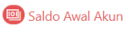 : ini digunakan untuk memonitoring list data saldo awal akun
: ini digunakan untuk memonitoring data jurnal memorial
: ini digunakan untuk memonitoring data semua jurnal
Menu tipe jurnal ini digunakan untuk monitoring data tipe jurnal pada jurnal akuntansi.
Tampilan ini berisi list tipe-tipe jurnal yang berhubungan dengan data jurnal akuntansi
Pengguna dapat melakukan pencarian data dengan filter yang sudah disediakan dengan klik tombol
Setelah itu akan muncul pop-up filter by keyword sesuai yang dibutuhkan pengguna
Masukkan keyword pada kolom jenis filter dan keyword seperti berikut:
Kemudian data tipe jurnal akan menampilkan data sesuai filter yang sudah pengguna tentukan, seperti berikut:
Menu saldo awal akun ini digunakan untuk monitoring pendataan saldo awal akun pada jurnal akuntansi.
Tampilan ini berisi list saldo awal yang berhubungan dengan data jurnal akuntansi
Pengguna dapat melakukan pencarian data saldo awal akun dengan filter yang sudah disediakan dengan klik tombol
Setelah itu akan muncul pop-up filter by keyword sesuai yang dibutuhkan pengguna, masukkan keyword pada kolom jenis filter dan keyword seperti berikut:
Kemudian list data saldo awal akun akan menampilkan data sesuai filter yang sudah pengguna tentukan, seperti berikut:
Pengguna dapat melakukan export data saldo awal akun yang berhubungan dengan data jurnal akuntansi, klik pada tombol , kemudian data yang sudah di export akan menampilkan data sebagai berikut:
Pengguna dapat melakukan import data saldo awal akun, klik pada tombol kemudian muncul form import untuk pilih cabang sesuai kebutuhan
Pengguna dapat melakukan edit data saldo awal akun, dengan klik tombol , Setelah itu akan muncul popup untuk form edit data seperti berikut:
Lakukan edit data sesuai dengan kebutuhan.
Pengguna dapat melakukan hapus data saldo awal akun dengan klik tombol , lalu muncul pop up konfirmasi hapus data supplier seperti berikut:
Menu saldo awal akun ini digunakan untuk monitoring pendataan jurnal memorial awal akun pada jurnal akuntansi.
Tampilan ini berisi list jurnal memorial yang berhubungan dengan data jurnal akuntansi
Pengguna dapat melakukan pencarian data jurnal memorial dengan filter yang sudah disediakan dengan klik tombol
Setelah itu akan muncul pop-up filter by keyword sesuai yang dibutuhkan, masukkan keyword tanggal, cabang dan ref seperti berikut:
Pengguna dapat melakukan import data jurnal memorial dengan klik pada tombol kemudian muncul form import untuk pilih cabang sesuai kebutuhan
Pilih file yang akan diuplaod sesuai dengan format yang sudah ditentukan seperti berikut:
Pengguna dapat melakukan tambah data pada jurnal memorial, dengan klik tombol , Setelah itu akan muncul popup untuk form tambah data seperti berikut:
Kemudian tambahkan data sesuai dengan inputan form dan klik simpan.
Menu semua jurnal ini digunakan untuk monitoring semia jurnal yang ada pada jurnal akuntansi.
Tampilan ini berisi list semua jurnal yang berhubungan dengan data jurnal akuntansi
Pengguna dapat melakukan pencarian data semua jurnal dengan filter yang sudah disediakan dengan klik tombol
Setelah itu akan muncul pop-up filter by keyword sesuai yang dibutuhkan pengguna, masukkan keyword pada input jenis dan value seperti berikut:
Kemudian list data semua jurnal akan menampilkan data sesuai filter yang sudah pengguna tentukan, seperti berikut:
Pengguna dapat melakukan export data semua jurnal yang berhubungan dengan data jurnal akuntansi, klik pada tombol , kemudian data yang sudah di export akan menampilkan data sebagai berikut:
Fitur ini berfungsi untuk membuat akun closing pada AG-Accounting
Berikut ini merupakan bagian penting dari pengaturan hak akses pada setiap level pengguna AG-Accounting:
Fitur ini berfungsi untuk membuat akun login pada AG-Accounting
Fitur ini berfungsi untuk membuat group jabatan untuk pengguna
Fitur ini berfungsi untuk membuat group divisi untuk pengguna
Fitur menu untuk monitoring data pengguna teridentifikasi.
Info pengguna teridentifikasi.
Fitur menu untuk melakukan perubahan password pengguna.